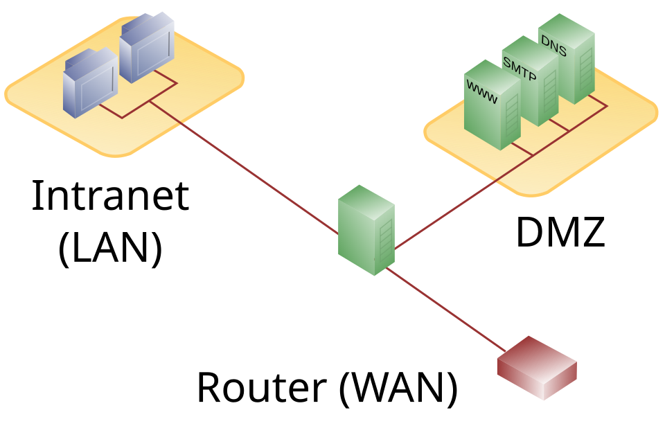

An operating system (OS) coordinates hardware and provides common services to applications. It manages memory, storage, devices, networking, users, and running programs. Security depends in part on how the OS separates users and processes and records what happens.

1. What an operating system does
The OS kernel manages privileged operations and access to hardware. Applications usually run with less privilege and ask the OS for services. This separation helps contain mistakes and limit what a program can do, though vulnerabilities or excessive permissions can weaken it.
Accounts represent identities. Groups make it easier to assign shared permissions. Administrative or root access can change system-wide settings, so everyday work should use a standard account where practical.
2. Linux, Windows, and macOS
Linux is a family of open-source operating systems used on servers, desktops, embedded devices, and cloud systems. Distributions package the Linux kernel with software and tools; command-line conventions and package managers vary.
Windows is widely used on personal computers and in organizations. It provides graphical administration tools, PowerShell, Windows Defender, and event logging. macOS is Apple's desktop operating system, with a Unix-based foundation, graphical tools, and a terminal.
The interfaces differ, but the security ideas are shared: patch software, limit privilege, protect credentials, use trusted sources, and review useful system records.
3. Processes and services
A process is a running program with its own memory and operating-system resources. The OS assigns each process an identifier (PID), schedules its use of the CPU, and enforces its permissions. A service (also called a daemon on many Unix-like systems) is a background process that provides a capability, such as printing or synchronizing time.
Unexpected CPU use or unfamiliar programs can be worth investigating, but a process name alone is not proof of malicious activity. Check its location, publisher, parent process, expected role, and security software findings before taking action.
Use your built-in process viewer: Task Manager on Windows, Activity Monitor on macOS, or System Monitor / ps on Linux. Identify a browser process and compare its resource use while idle and while you load a page. Do not terminate processes you don't recognize.
4. Files and permissions
Permissions determine which identities may read, change, or run a file. Linux and other Unix-like systems commonly use owner/group/other permissions and additional access-control lists. Windows uses access-control lists (ACLs) to grant specific rights to users and groups. macOS combines Unix permissions with additional privacy controls.
The least privilege principle means giving an account or application only the access it needs, for only as long as it needs it. This limits the damage if an account or program is misused.
Don't fix a permissions problem by making a file or folder accessible to everyone. Identify the intended owner and users, then grant only the necessary access.
5. Authentication
Authentication checks that someone is who they claim to be. It is different from authorization, which decides what an authenticated identity can do. Passwords are one authentication factor; a separate possession factor (such as a security key) or inherence factor (such as a biometric) can add protection.
Use unique passwords with a reputable password manager, enable multifactor authentication where available, and protect recovery options. Do not share accounts: individual identities make it easier to limit access and understand audit records.
6. Logs and events
Logs are records of system and application activity. They may record logins, service changes, errors, or security events. Windows provides Event Viewer; macOS provides Console; Linux commonly uses journalctl or files under /var/log. Exact sources depend on the system and configuration.
A log entry is a clue, not a conclusion. Consider its timestamp, time zone, source, surrounding events, and whether the system clock was correct. Logs can be incomplete, rotated, or altered, so important records may need central collection and access protection.
Open your OS's log viewer and look for ordinary events from the last day, such as a successful sign-in or an application update. Note the time and source, and avoid sharing log exports publicly: they can contain usernames, device names, or other private details.
Practice and recap
- How does a process differ from a service?
- What is the difference between authentication and authorization?
- Why is least privilege useful?
- What context would you gather before interpreting a log entry?
As a personal baseline, confirm your device receives automatic security updates, review which accounts have administrator access, and know where to find its built-in security and event tools.
Free learning path and practice
Learn the foundations
- Ubuntu: The Linux command line for beginners — a free, hands-on introduction to the shell.
- Microsoft Learn: Windows security — free documentation on built-in Windows security features.
- Apple Platform Security — free reference material for Apple platform protections.
Practice in guided labs
- TryHackMe: Linux Fundamentals Part 1 and Windows Fundamentals 1 — introductory, guided rooms.
- HTB Academy catalogue — search for Linux and Windows fundamentals modules to practice command-line and operating-system basics.
Watch operating-system playlists
- Learn Linux TV: System Administration — practical Linux administration from a channel with approximately 1.12M subscribers.
- Learn Linux TV: Linux Security — a focused Linux-hardening supplement.
- Professor Messer: CompTIA A+ 220-1201 — endpoint and operating-system foundations from a channel with approximately 1.37M subscribers; this is not a dedicated Windows administration course.
Subscriber counts are approximate and change over time; video view counts vary. Pair the videos with the hands-on and official written resources above.
Use disposable training environments for labs; don't change permissions or terminate services on a device you depend on.
See the standards and compliance guide for system-hardening and identity topics used in product security work.